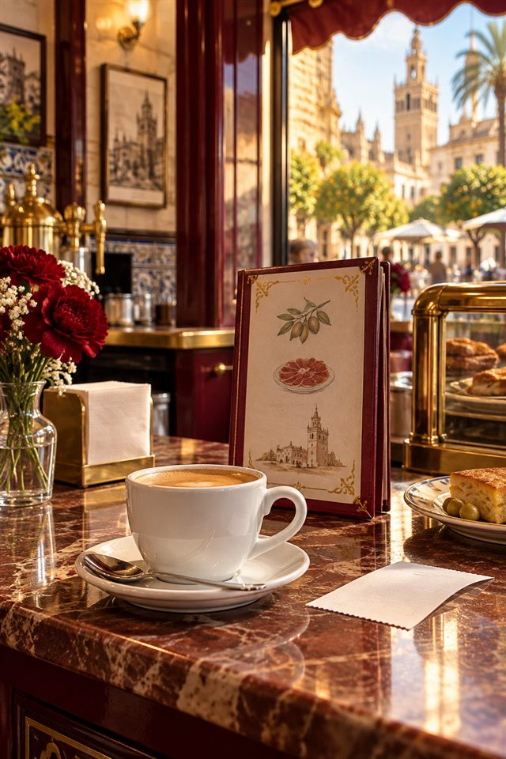
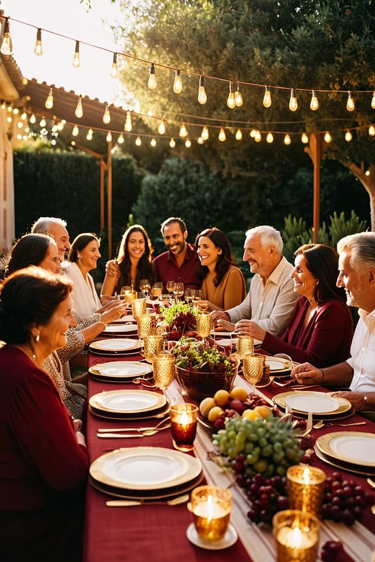

El Mundo Hispano presenta
Sube tu español,
paso a paso.
Cada escalón es un juego distinto para hablar en español con tu compañero. Elige tu nivel y empieza a subir.
Los juegos
Tres formas de hablar español
Cada nivel es un juego distinto para practicar en pareja. Empiezas con retos sencillos y terminas hablando sin guion.

El mazo de conversación
Toca el mazo y descubre un reto sorpresa: presentarte, pedir en una cafetería, describir tu casa… Cada carta trae una escena que te da ideas.
- 7 retos de la vida diaria
- Selección al azar, sin repetir hasta acabar el mazo
- Un consejo con frases útiles en cada reto
Cartas de situaciones
Quince cartas boca abajo. Dale la vuelta a una y reacciona: ¿está bien o está mal? ¿Qué haces tú? Así practicas opinar y explicar por qué.
- 15 situaciones con su propia escena
- Cartas que se giran con animación 3D
- Carta al azar o barajar para empezar otra vez

Habla sin guion
Gira la ruleta de temas y habla de tu día, tu familia, tu rutina o tus gustos. El temporizador te ayuda a hablar un minuto entero sin parar.
- 4 temas de la vida diaria
- Preguntas guía para no quedarte en blanco
- Temporizador de 1 o 2 minutos
Por qué funciona
Pensado para que hables
Retos sorpresa
El juego elige por ti, así practicas como en una conversación real.
Escenas de cine
Cada reto tiene su imagen. Tócala para verla entera y buscar ideas.
Temporizador
Ganas fluidez hablando un minuto seguido, sin miedo a equivocarte.
Tu progreso
Tu cuenta guarda los niveles que empiezas y los que completas.
En cualquier pantalla
Juega en el móvil, en la tableta o en el ordenador.
Solo para alumnos
Acceso privado con el correo y la contraseña que te da la academia.
Cómo funciona
Elige un escalón
Empieza por tu nivel.
Juega en pareja
Cada reto es una conversación.
Sube de nivel
Cuando estés listo, al siguiente.
Acceso de alumnos
¿Ya tienes tu cuenta?
Entra con el correo y la contraseña que te dio tu profesor/a y empieza a subir.